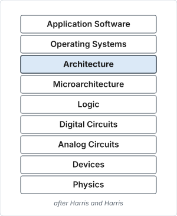

Background
Recap: architecture vs microarchitecture
Architecture (ISA): the programmer's view of a computer.
- Defined by instructions & operand locations.
- Assembly language: human-readable format of instructions.
- Machine language: computer-readable format (1's and 0's).
- Assembly language → machine language conversion is done by the assembler.
- One-to-one correspondence (except for pseudo-instructions).
Microarchitecture: how to implement an architecture in hardware.

RISC-V history
- Began in 2010 at the University of California, Berkeley as a short project.
- Goal: to make a practical ISA that was open-sourced, usable academically, and deployable in any hardware or software design without royalties.
- Introduced in Aug 2014.
- Transferred to the RISC-V Foundation in 2015, and then on to RISC-V International, a Swiss non-profit entity, in November 2019.
- Fast gaining traction — numerous open source as well as commercial implementations.
- Software support improving fast.
Notable products and software
- ESP32-C3, ESP32-C6. ESP32-S series also have ultra-low-power cores which are RISC-V based, though the main processors are Xtensa based.
- Raspberry Pi Pico 2, Microchip FPGAs/SoCs.
- Modern Nvidia GPUs and large processor chips include dozens of embedded NV-RISCV management cores.
- Many implementations and commercial products — see the list on Wikipedia.
- Many hardware accelerators built around RISC-V cores.
- Mainline support for RISC-V ISA was added to the Linux kernel in 2022.
- In July 2023, RISC-V, in its 64-bit variant called
riscv64, was included as an official architecture by Debian.
RISC-V features
- As a RISC architecture, the RISC-V ISA is a load–store architecture — only
load/store variants can access memory.
- No mixing of memory access with data processing or branching.
- Interesting design choices to simplify hardware implementation.
- Especially the encoding of immediates.
- Modular design — the instruction set is designed for a wide range of uses.
- The base instruction set has a fixed length of 32-bit naturally aligned instructions (different base variants such as RV32I, RV32E, RV64I, … exist).
- The ISA supports variable length extensions where each instruction can be any number of 16-bit parcels in length.
- Extensions include multiplication (M), floating point (F, D, Q), atomics (A), compressed instructions (C — 16-bit long instructions for high code density like ARM Thumb), …
Note
Instruction lengths and word lengths are not necessarily the same.
RISC-V base instructions
To process data.
- register:
add,sub,or,xor,and,sll,srl,sra,slt,sltu - immediate:
addi,ori,xori,andi,slli,srli,srai,slti,sltiu - upper immediate:
lui(load upper immediate),auipc(add upper immediate to pc)
To access memory.
- offset mode:
lw,lh,lb,lhu,lbu,sw,sh,sb - No data processing. No pre/post index addressing.
To change control flow.
- Branch (conditional, no link):
beq,bne,blt,bge,bltu,bgeu - Jump (unconditional, with link):
jal,jalr
Special purpose instructions.
ecall(system call),ebreak(breakpoint),fence(memory barrier)